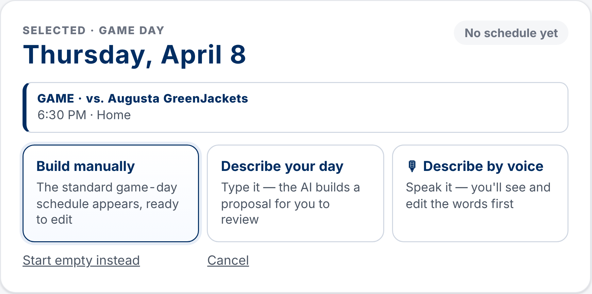

Build, customize and publish your team's daily schedule in minutes.
cperez.app/apps/manager-hub
1Select your team and date
2Build manually or with AI
3Review and publish
ABuild your daily schedule
1
Choose your affiliate
Click the team name at the top left to switch workspaces.
Triple-ADouble-AHigh-ASingle-AComplex
Complex covers workouts and camps with players from every affiliate (the Camps tab).
2
Select a date
The calendar opens on today. Tap any date. Games are already there — vs for home, @ for road — and the selected day shows the opponent and first pitch.
3
Click Build Daily Schedule
Pick how you want to build — the real screen looks like this:

Build manually places the standard game-day activities; Describe your day and Describe by voice use AI. Start empty instead gives a blank day.
4
Review & publish
Click any block to change its time, length, group or facility, or drag it. Save draft keeps it as a draft; Publish → shows every change, then Publish schedule makes it official. Nothing is published until you approve it.
BStandard game-day times
Manager Hub reads first pitch from the imported game schedule and places these for you:
Activity
Starts
Length
Home BPHome batting practice
2 h 30 min before
45 min
Visitor BPVisitors' batting practice
1 h 45 min before
45 min
Pregame Warmup
20 min before
10 min
AnthemNational anthem
10 min before
10 min
Example — 6:30 PM gameplaced automatically
Home BP
Visitor BP
open time for your own work
Pregame Warmup
Anthem
First pitch
Every time is editable on the day; defaults can be changed under Game Day Defaults.
Game times come from the affiliate schedules, in the ballpark's local time. Check for postponements and time changes — if a game moves, Manager Hub offers to recalculate.
First pitch TBD? You'll be asked for it first. Doubleheader? Choose which game to build around.
CUsing the AI schedule builder
Example — type or say“Catchers report at 1:30 PM. Early hitting starts at 2:00. Pitchers stretch at 3:00. Add a defensive meeting before BP.”
Describe→Review→Publish
Use ordinary language — say the times, groups and activities you know.
It knows the selected date and that day's game; the standard game-day times stay unless you change them.
It only proposes. Edit anything, ask for changes (“move BP 15 minutes later”), then publish.
Voice works in Chrome, Edge and Safari. If AI is unavailable, the built-in reader and manual building still work.
Games are already loadedNo need to enter opponents or first pitch.
Everything is adjustableAdd, move, resize or remove any activity. Undo is always there.
Reopen any timeA day with a schedule shows Edit Daily Schedule and its Draft or Published status.
Complex daysWithout a game, Complex starts from a standard workout day, not game-day times.
Manager Hub · Daily Scheduling Quick Start · sign in with your organization's access codecperez.app/apps/manager-hub